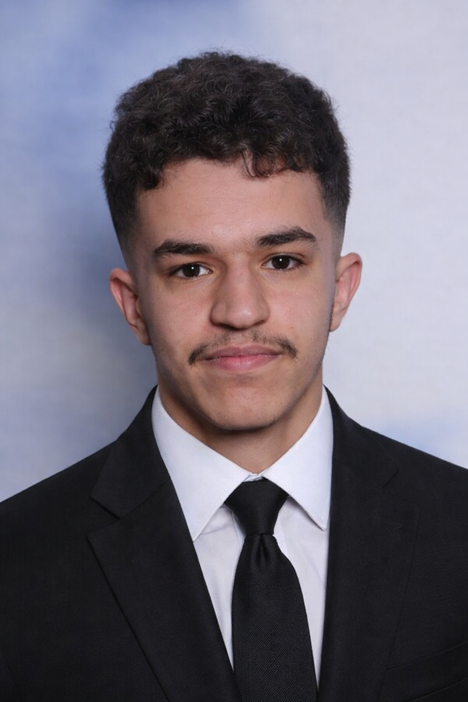

Rayane HAYA
Étudiant en BTS SIO option SLAM
Passionné par le développement, j'étudie actuellement au Lycée Paul Lapie à Courbevoie. Spécialisé en SLAM, je conçois des solutions logicielles et des applications web modernes.
Mon Parcours
2024 - 2026
BTS SIO - SLAM
Lycée Paul Lapie, Courbevoie
Développement Java, Python, PHP et gestion de bases de données SQL.
2021 - 2024
Baccalauréat Général
Lycée Paul Lapie
Spécialités Mathématiques et SES.